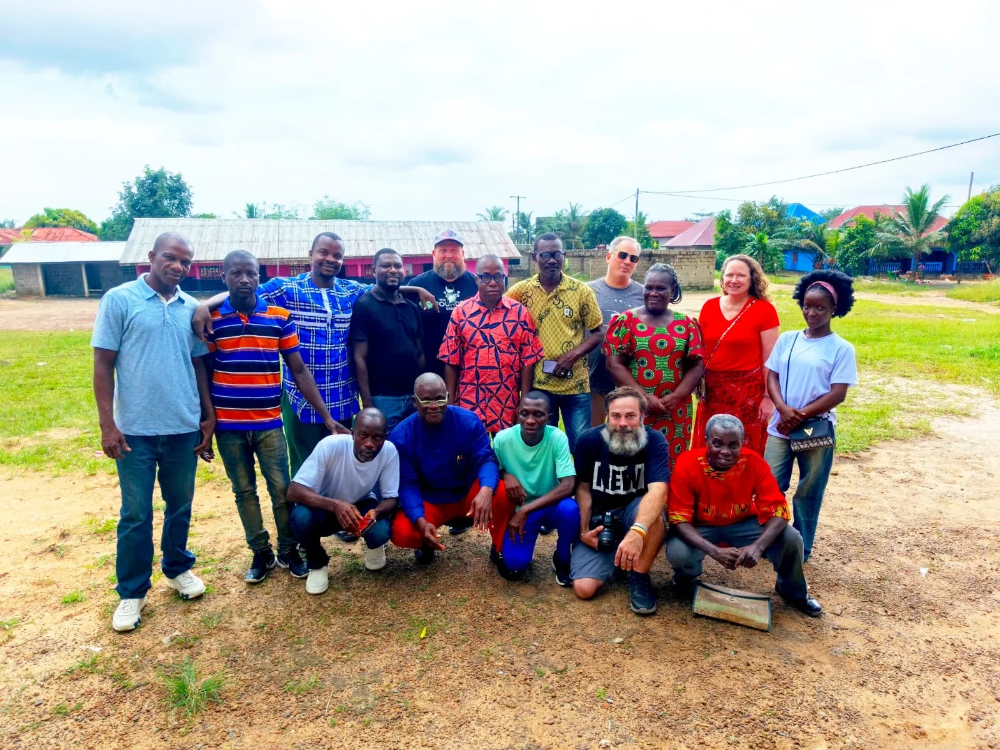

Give Me Ears to Hear
John 8:1–11
Loading original sermon study…
Three messages. One invitation to listen, see and respond. Follow the teaching, reflect in your own words and discover the mission behind the stories.
John 8:1–11
Loading original sermon study…
Our visit to Liberia was one chapter. Discover the people, churches and partnerships behind 100 Acres of Hope, follow the documentary project and learn how you can help support future mission work.
Explore the mission →